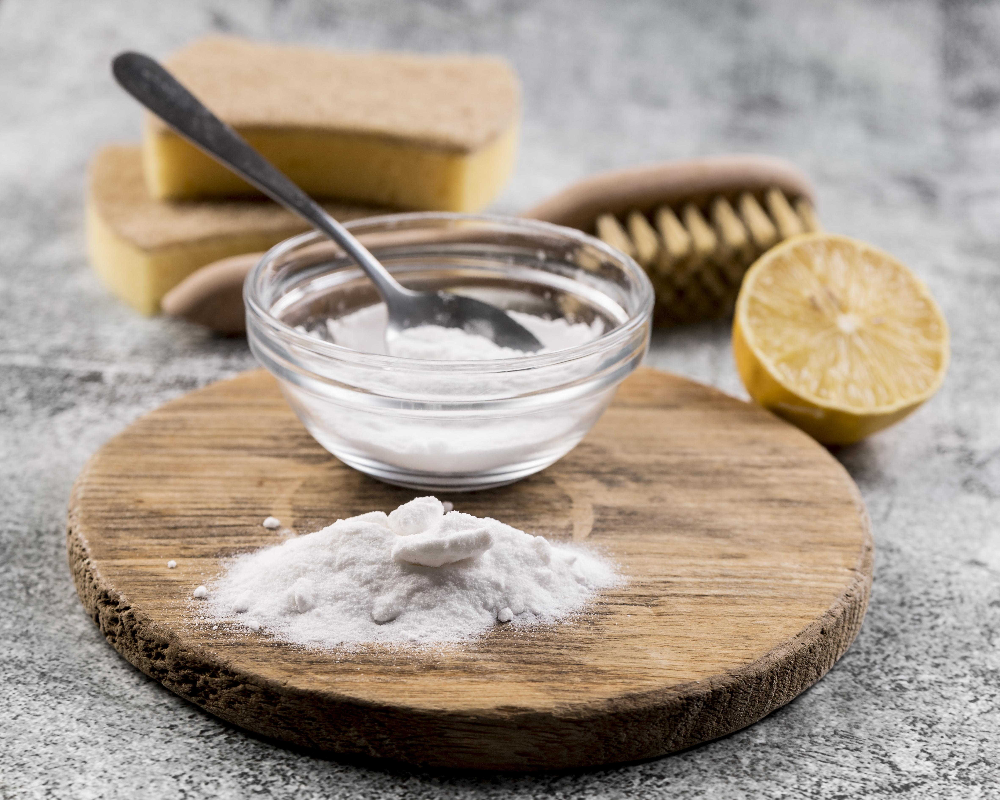

Sütlaç Tarifi
Malzemeler :
- 1 litre süt

- 1 su bardağı pirinç

- 1 su bardağı şeker

- 1 su bardağı su
- 1 tatlı kaşığı vanilya

Yapılışı :
- Pirinci 1 su bardağı su ile haşlayın.
- Sütü ekleyin ve kısık ateşte pirinçle birlikte pişirin.
-
Şekeri ekleyin ve karışımı sürekli karıştırarak koyulaşana kadar
pişirin.
- Vanilyayı ekleyip karıştırın ve ocaktan alın.
-
Karışımı kaselere dökün ve oda sıcaklığına gelince buzdolabında soğutun.
Tatlımız hazır :

Anasayfa